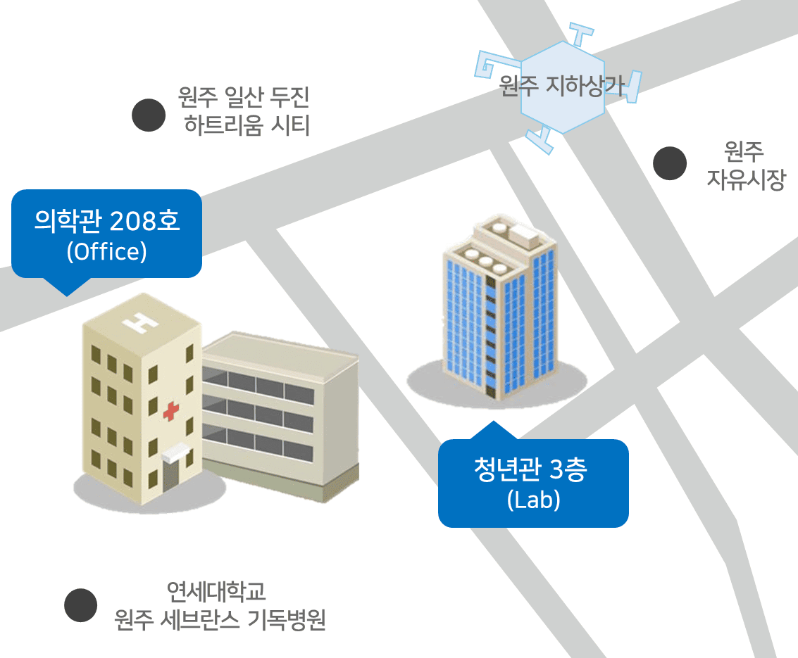

Welcome to the Lab of AI in Biomedical Informatics (LAIBI) at Yonsei University. We develop AI-driven solutions for biomedical informatics, bridging precision medicine and intelligent data analysis.
Dept. of Precision Medicine
Yonsei University Wonju College of Medicine
주소: (26427) 강원 원주시 원일로115번길 16, 3층 공동연구실 A
Address: 3F Joint Research Lab A, 16, Wonil-ro 115beon-gil, Wonju-si, Gangwon-do, 26427, Republic of Korea
Email: syang@yonsei.ac.kr
